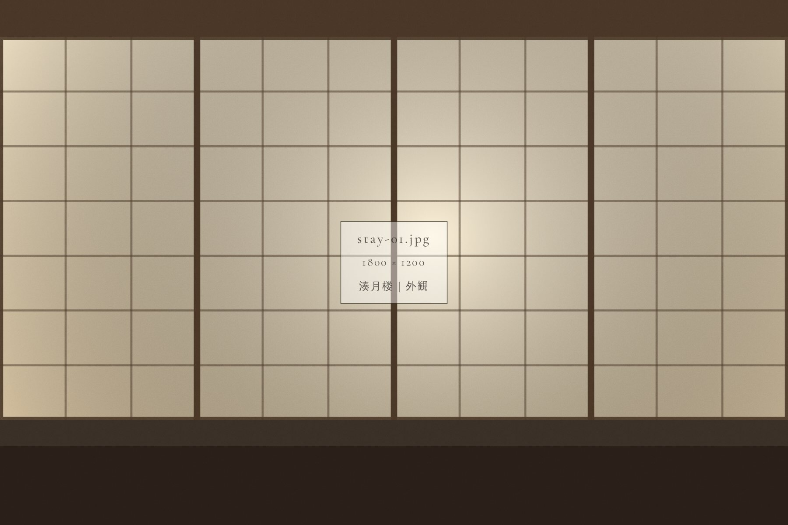
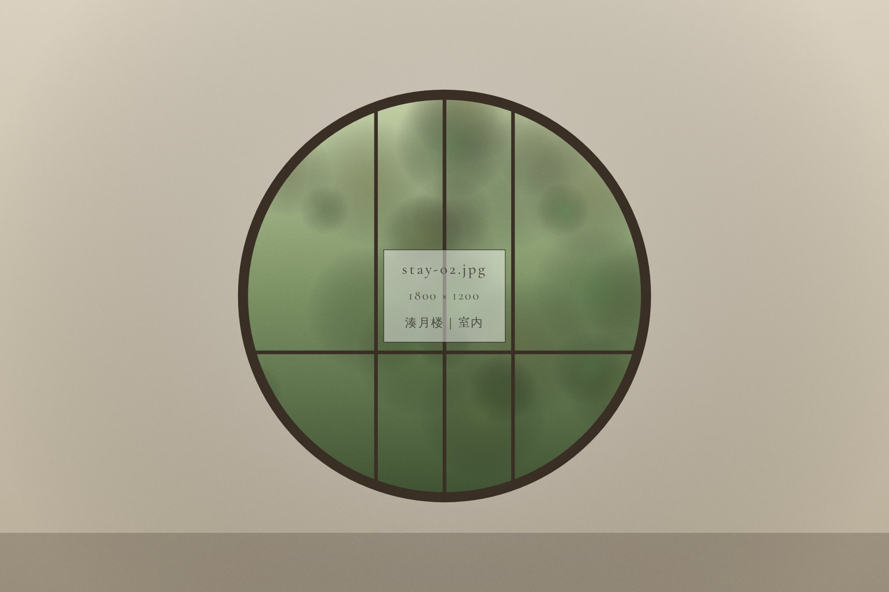
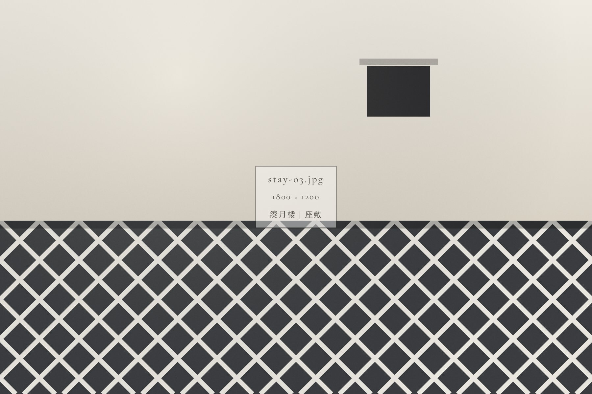
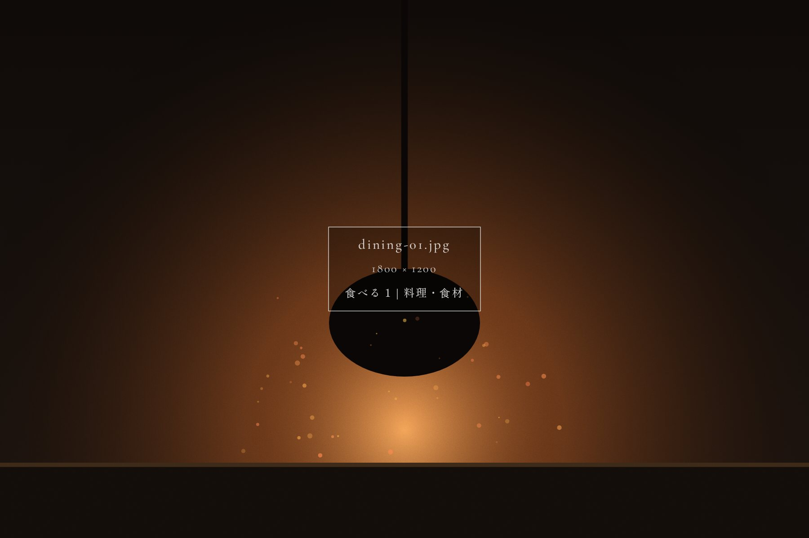
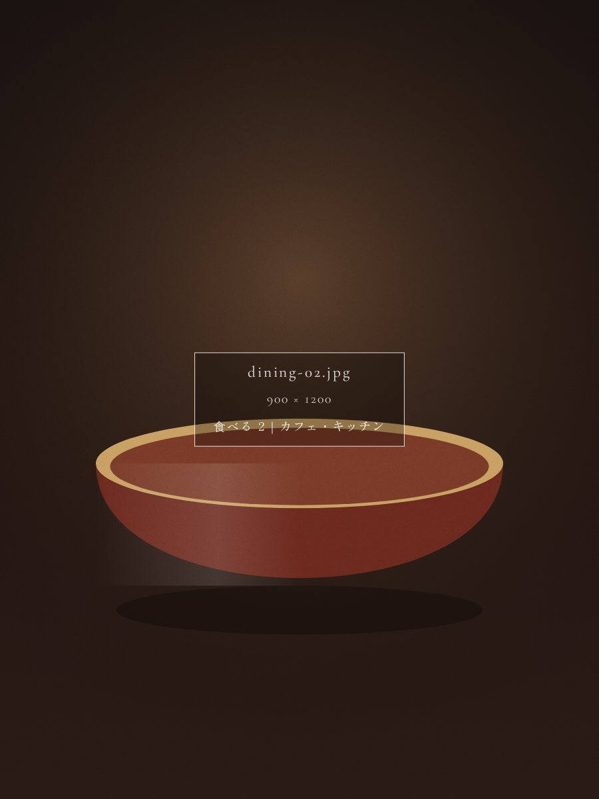
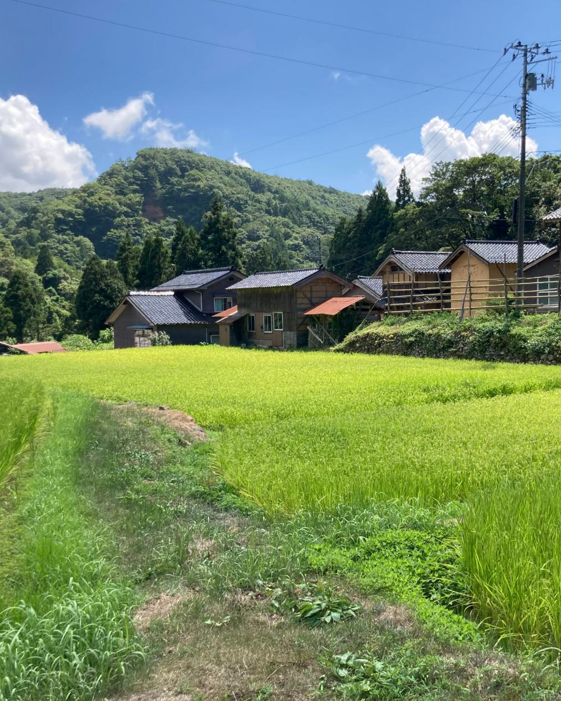
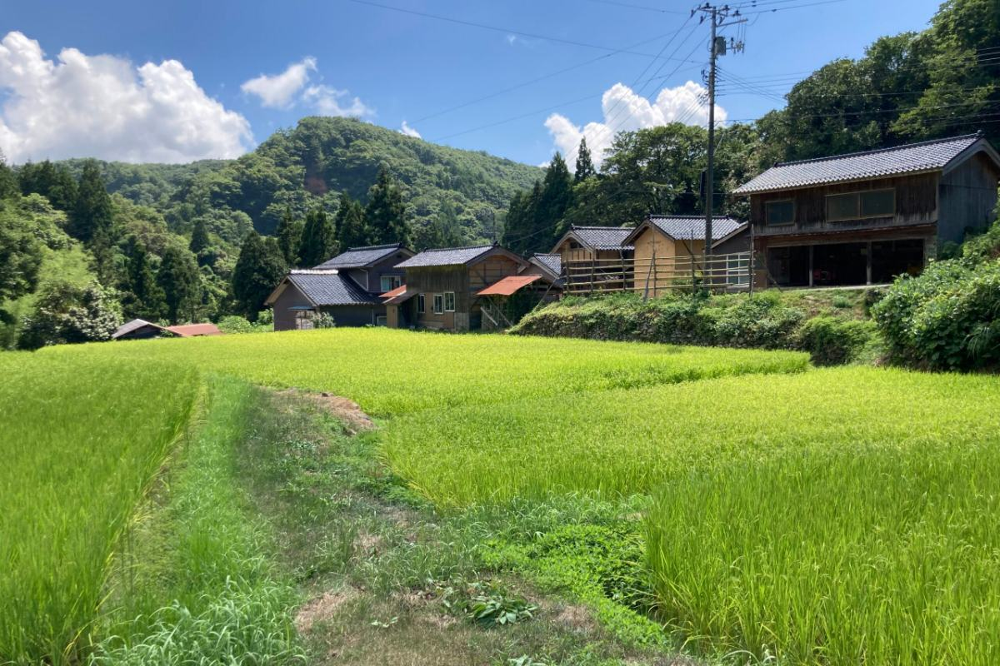
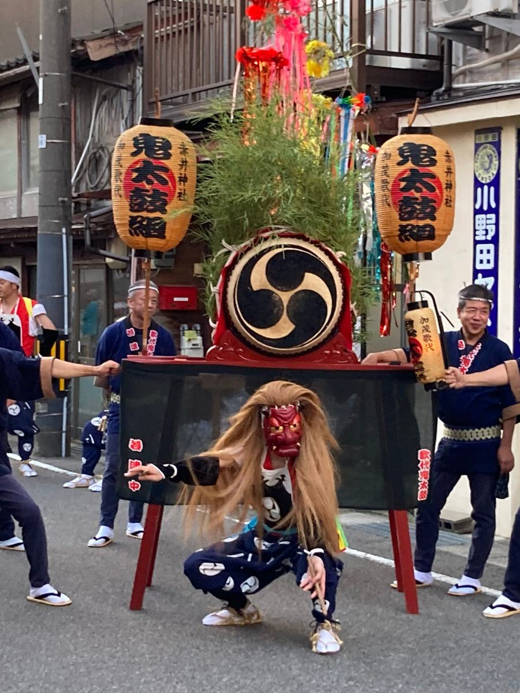
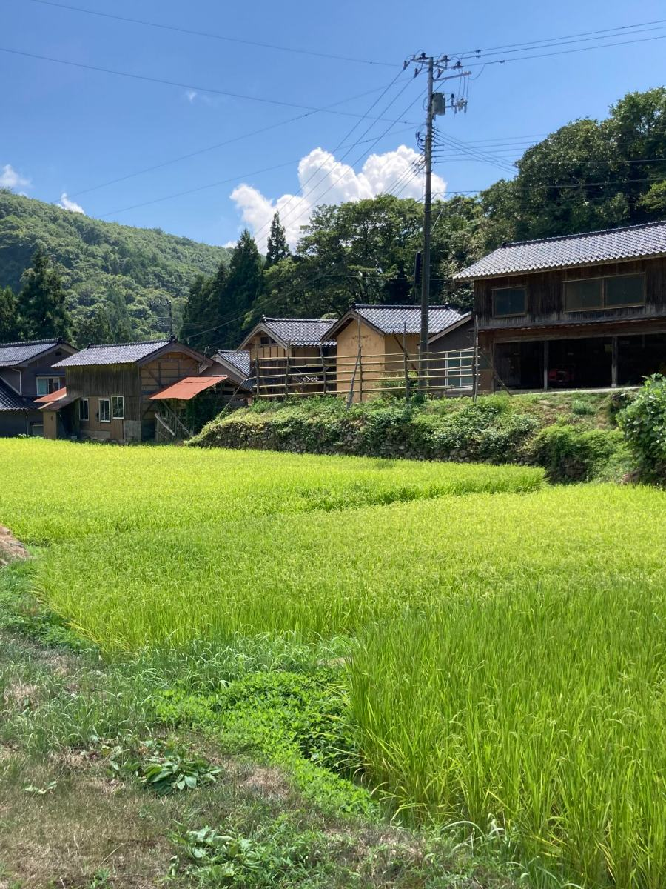

01
町家一棟貸しMachiya
両津湊の古い町並みに残る町家を、1日1組の貸切でご提供します。明治初期の面影を残した建物で、佐渡での時間をお過ごしください。
- 定員
- 6名（1日1組）
- 開業
- 2026年10月予定
- 交通
- 両津港から徒歩約10分
A machiya inn in Ryotsu Minato, Sado Island.
Opening October 2026.
01Concept
江戸後期から続く、 湊の町家へ。
日本海に浮かぶ佐渡島は、世界遺産「佐渡島の金山」とトキの里として知られる、豊かな自然と歴史・文化が交錯する島です。
その玄関口・両津湊の古い町並みに、江戸後期から続く屋号「善次」を受け継ぐ町家があります。
二〇二六年、一日一組・定員六人の小さな宿「湊月楼」として開業します。明治初期の面影を残した町家を丸ごと貸切でご提供します。
宿の開業に先立ち、現在は佐渡のプライベートガイドをご予約いただけます。佐渡に惚れ込んだスタッフ三名が皆様をお迎えします。

02Stay
1日1組・定員6人の小さな宿。
明治初期の面影を残した町家を、丸ごと貸切でご提供します。

01
両津湊の古い町並みに残る町家を、1日1組の貸切でご提供します。明治初期の面影を残した建物で、佐渡での時間をお過ごしください。

02
屋号「善次」として文化10年（1813年）から記録に登場する湊町の町家です。船業で得た資金を基に、幕末〜明治期に現在の姿に整えられました。

03
一棟・1泊あたりの基本料金です（税込）。最低宿泊数は1泊です。繁忙期・閑散期など、時期により料金を変更する場合があります。
03Dining

獲れたてを、 町家の台所で。
漁師や農家の方々と直接交流しながら、その場で獲れた新鮮な食材を、併設のカフェや宿のキッチンで味わう。
佐渡のサステナブルな暮らしを、五感でご堪能いただけます。

04Experience
「湊月楼」は、佐渡の豊かな自然と人々の暮らしを深く体感できる農林漁業体験民宿です。ドキュメンタリーで事前に学んだ現場を、漁師や農家の方々と直接交流しながら、1日1組のプライベートな体験でお楽しみいただけます。
01
加茂湖に浮かぶ牡蠣筏をめぐる、プライベートクルーズです。

02
トキと共生する里山で、農家の方々と一緒に農業を体験します。
03
湊町に受け継がれる伝統の漁業や林業を、見学・参加します。
04
通訳ガイドと無料専用車で、佐渡の自然・歴史・文化をめぐります。
暮らすように、 佐渡を歩く。
05Town
佐渡を深く知るには、名所を訪れるだけではなく、そこに暮らす人の話を聞き、その土地に残る物語に触れること。
湊月楼では、台湾・タイ出身の通訳ガイドが、佐渡の自然、歴史、文化をめぐるプライベートガイドをご案内しています。世界遺産「佐渡島の金山」をはじめ、相川の町並みや港町の風景まで、お客様の興味に合わせて佐渡をめぐります。
町のよみものへ


06Journal
両津湊の町のこと、佐渡の季節のこと。スタッフが歩いて集めた小さな話を、記事にしてお届けしています。
07Access
湊月楼佐渡町家一棟貸しの宿
Reservation
宿泊のオンライン予約は準備中です（2026年10月開業予定）。
開業に先立ち、現在は佐渡プライベートガイドのご予約を受け付けています。